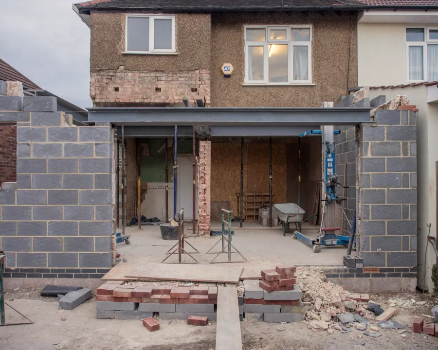
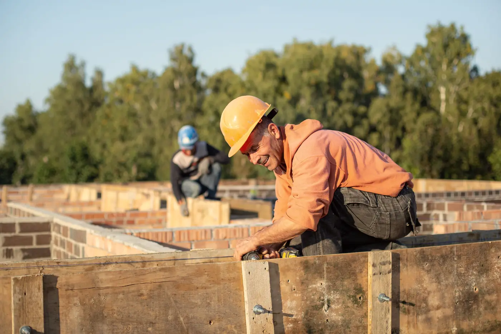
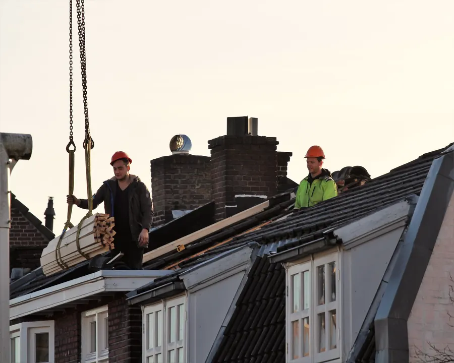
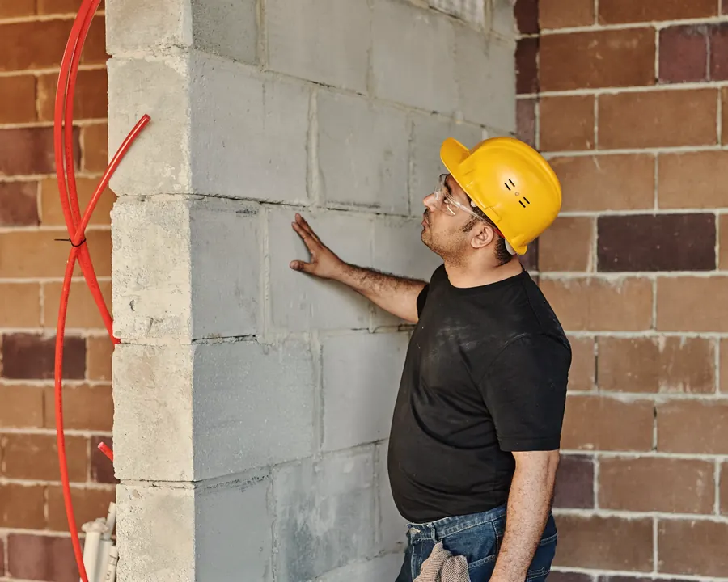
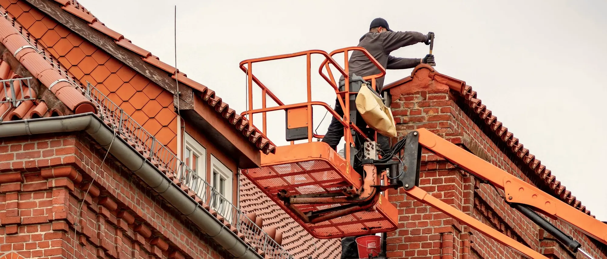
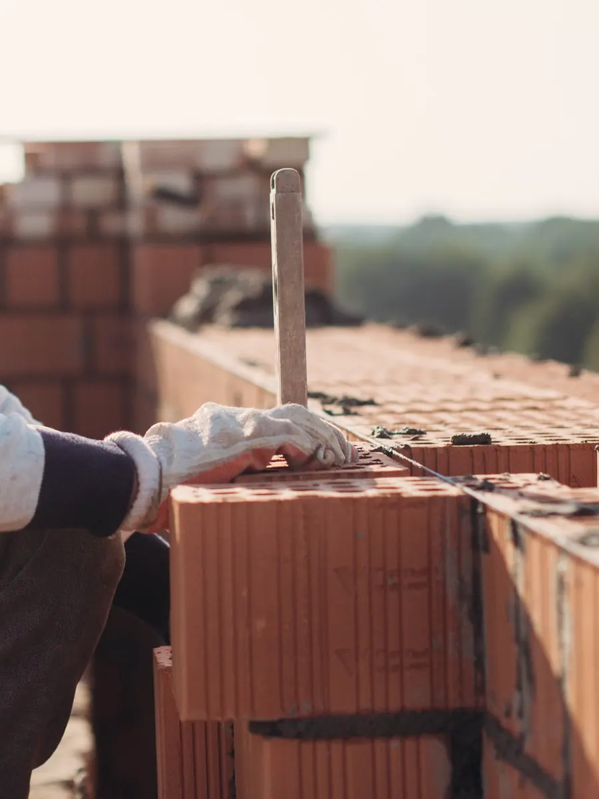
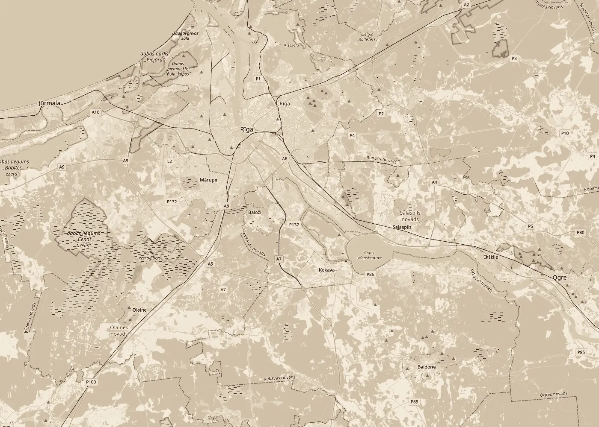

Ēku būvniecība
Būvējam privātmājas un citas ēkas: no pamatiem līdz jumtam. Veicam arī ēku remontu, pārbūvi un piebūves.
- Pamati un cokols
- Mūra un bloku sienas
- Pārsegumi un jumts
- Remonts un piebūves

Būvniecība · Būvdarbu vadīšana · Būvuzraudzība
SIA „ErIF” būvē ēkas, vada būvdarbus un veic būvuzraudzību. Esam Ķekavas novadā un strādājam Rīgā un Pierīgā.
Būvkomersantu reģistrā mūsu joma ir ēku būvdarbu vadīšana un būvuzraudzība. Tāpat būvējam un remontējam ēkas paši.

Būvējam privātmājas un citas ēkas: no pamatiem līdz jumtam. Veicam arī ēku remontu, pārbūvi un piebūves.

Būvdarbu vadītājs organizē darbus objektā: secību, brigādes, materiālus un termiņus, un atbild par to, lai darbi notiktu pēc projekta.

Pārstāvam pasūtītāju objektos, kurus būvē citi būvkomersanti: pārbaudām, vai darbi atbilst projektam, normatīviem un līgumam, un pieņemam tikai to, kas izdarīts pareizi.

Rūpīgi darīts darbs kalpo paaudzēm.
Ēku būvniecība · Ķekava, Rīga, Pierīga
Svarīgākie darbi ēkā drīz paslēpjas zem betona, apdares un jumta. Tos pārbaudām un fiksējam, pirms tie tiek aizsegti.

Pamatne, veidņi, armatūra un aizsargslānis, hidroizolācija un iebūvējamās detaļas.
Mūra vertikāle un šuves, pārsedzes virs ailām, sienu sasaiste un siltumizolācija.
Balsti un enkurojumi, sijas vai armatūra, atbilstība projekta mezgliem.
Spāres un stiprinājumi, tvaika izolācija, siltinājums, pretvēja plēve un latojums.
Ūdensvads, kanalizācija, apkure un elektrība, pirms sienas un grīdas tiek aizdarītas.
Defektu saraksts, izpilddokumentācija un ēkas nodošana ekspluatācijā.
Četri soļi, un katrā no tiem zināt, kas notiek un kas par to atbild.
Pastāstiet, kur ir objekts, kas tiek būvēts un kurā posmā ir darbi. Ja ir projekts, pievienojiet to.
Izskatām projektu un apskatām vietu, lai saprastu darba apjomu.
Vienojamies par darbiem, termiņiem un cenu. Visu ierakstām līgumā.
Būvējam, vadām vai uzraugām darbus līdz pieņemšanai un nododam dokumentus.
SIA „ErIF” ir reģistrēta 2013. gadā. Kopš 2021. gada esam būvkomersantu reģistrā ar jomu ēku būvdarbu vadīšana un būvuzraudzība.

Strādājam Rīgā, Ķekavas novadā un Pierīgā. Ja objekts ir citur Latvijā, piezvaniet, un vienosimies.
V. Kontakti
Zvaniet vai rakstiet. Atbildēsim un vienosimies par objekta apskati.
Tālrunis28 485 339 E-pastsernests.linavskis@gmail.comAdrese„Ellas”, Odukalns, Ķekavas pag., Ķekavas nov., LV-2123